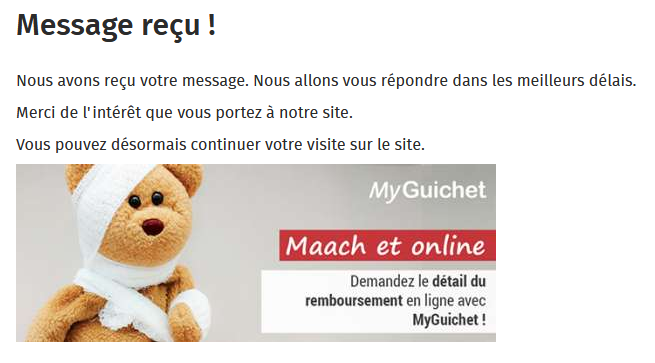
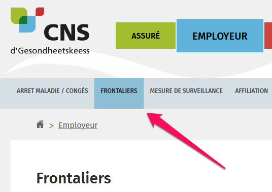
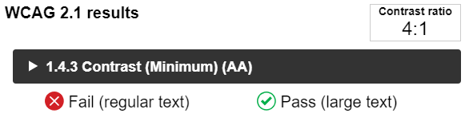
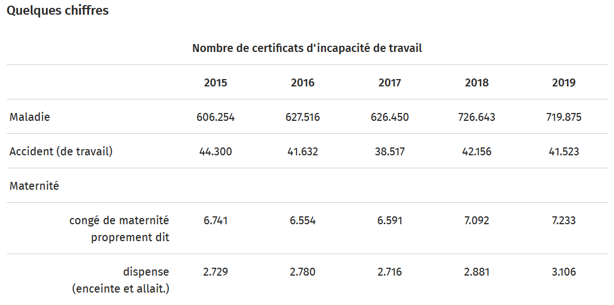
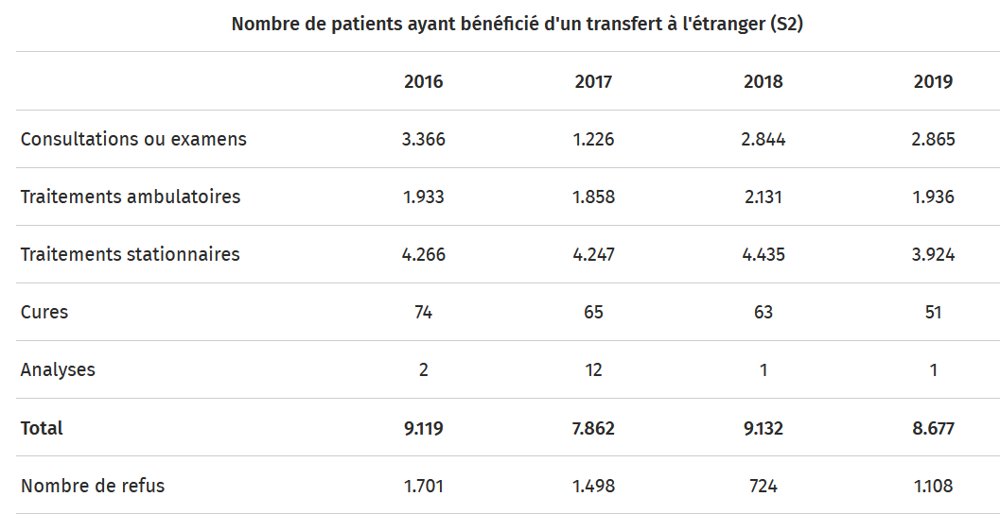
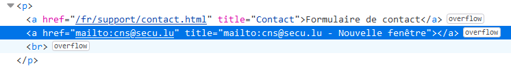
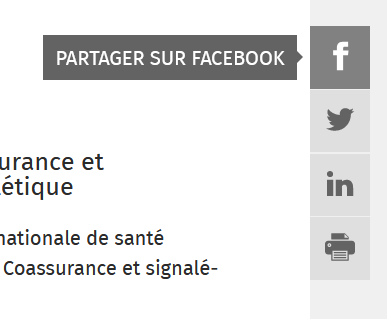
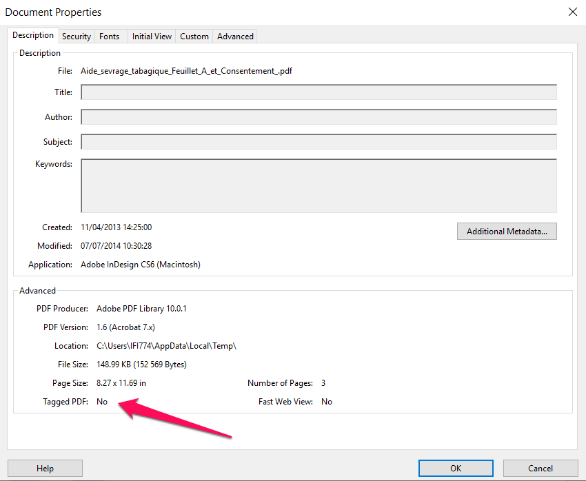

Introduction
Contexte
Dans le cadre de la loi du 28 mai 2019, le SIP est en charge du contrôle de l’accessibilité des sites et applications mobiles publics. Ce contrôle se fonde sur différents types d’audits réalisés de manière indépendante des équipes de conception.
Sur la période 2020-2021, le SIP doit réaliser 15 audits complets de sites, 87 audits simplifiés de sites et 2 audits d’applications mobiles.
Un comité constitué de représentants d’associations du domaine du handicap au Luxembourg a sélectionné le site cns.public.lu pour un audit complet, conformément au référentiel d’accessibilité luxembourgeois, le RGAA.
Cet audit a été réalisé par le service information et presse et vérifié par les experts de la société Access42, en utilisant les outils et techniques de l’état de l’art.
Un relevé d’audit complète ce rapport (cf. document joint).
Échantillon
L’audit a porté sur un échantillon de 15 pages.
Environnement de test
| Technologie d'assistance | Navigateur |
|---|---|
| NVDA (2020.3) | Firefox 83 |
| JAWS (2021) | Firefox 83 |
| VoiceOver (Big Sur 11.0.1) | Safari 14 |
| Système d’exploitation | Technologie d’Assistance | Navigateur |
|---|---|---|
| iOS 14.3 | VoiceOver | Safari |
Accessibilité des pages de l’échantillon
Conformité au RGAA
Le présent site est conforme au RGAA 4 à 59.49 %.
Le site présente un niveau général d’accessibilité moyen, avec 55.93 % de conformité au niveau A et 70% de conformité au niveau AA.
| Page | Taux de conformité |
|---|---|
| Accueil | 79.55% |
| Contact | 86.00% |
| Aspects légaux | 97.37% |
| Accessibilité | 100.00% |
| Plan du site | 100.00% |
| Résultats de moteur de recherche | 86.36% |
| Assuré | 100.00% |
| Aide et FAQ en ligne | 82.46% |
| Déclaration d'incapacité de travail | 86.54% |
| Adresse de séjour temporaire | 87.76% |
| Recrutement | 94.12% |
| Activités de la CNS | 88.37% |
| Les finances et chiffres-clés de la CNS | 95.12% |
| Programme d'aide au sevrage tabagique | 97.50% |
| Rapport annuel - 2019 | 95.12% |
La moyenne des pages est de 91.75 %, la meilleure page a un taux de conformité de 100 % et la plus mauvaise page 79.55 %.
| Thématique | Taux de conformité |
|---|---|
| IMAGES | 33% |
| CADRES | 50% |
| COULEURS | 0% |
| MULTIMÉDIA | 0% |
| TABLEAUX | 20% |
| LIENS | 50% |
| SCRIPTS | 0% |
| ÉLÉMENTS OBLIGATOIRES | 56% |
| STRUCTURATION | 33% |
| PRÉSENTATION | 86% |
| FORMULAIRES | 62% |
| NAVIGATION | 100% |
| CONSULTATION | 75% |
Impacts utilisateurs
Les personnes ayant un handicap visuel ou moteur sont les principales impactées. En effet les problèmes liés aux liens, scripts et à la structuration des contenus rendent difficile la consultation et l’interaction avec les contenus pour ces personnes.
Contenus dérogés
La dérogation permet d’exclure certains contenus du champ d’application du référentiel. Ces cas de dérogation sont encadrés par la loi et décrits sur la page « Obligations » du site accessibilite.lu.
Les contenus suivants n’entrent pas dans le calcul de la conformité ni dans le périmètre des éléments à rendre accessible, ils sont dérogés :
Sur la page P11, la vidéo « agent de guichet » car c’est un média temporel préenregistré qui a été publié avant le 23 septembre 2020 ;
Sur la page P04, le PDF de la norme EN 301 549, car il fait partie des contenus qui ne sont ni financés, ni développés par, ni sous le contrôle de la CNS.
Note sur le relevé des non-conformités
Ce document n’a pas vocation à être exhaustif. Nous illustrons les différents problèmes d’accessibilité rencontrés via quelques exemples issus du relevé des non-conformités (cf. document joint).
Dans le relevé des non-conformités toutes les occurrences de chaque problème ne sont pas relevées. Pour vos corrections, nous vous recommandons donc de vérifier toutes les occurrences des non-conformités relevées sur chaque page.
Avis global
Bien que le taux de conformité soit seulement de 59%, il est clair que des efforts de mise en accessibilité ont déjà été réalisés sur le site cns.public.lu, qui a une base solide notamment sur les thématiques « présentation », « navigation » et « consultation ».
Une part non négligeable des problèmes d’accessibilité détectés est due aux scripts, aux liens, aux formulaires, aux documents PDF ainsi qu’au service de questionnaire embarqué sur les pages P08 et P09. Une attention toute particulière devra être portée à ces différents points pour les corriger en priorité.
Annexe technique
Images
Recommandations : Donner à chaque image porteuse d’information une alternative textuelle pertinente et une description détaillée si nécessaire. Lier les légendes à leurs images. Remplacer les images textes par du texte stylé lorsque c’est possible.
Images de décoration
Les images de décoration ne doivent pas avoir d’alternative textuelle et doivent être ignorées correctement par les technologies d’assistance. Dans le cas contraire, elles peuvent causer des problèmes de compréhension aux utilisateurs de lecteurs d’écran (aveugles et grands malvoyants).
Pour une image bitmap, son attribut alt doit être vide. Pour une image vectorielle SVG, celle-ci doit avoir l’attribut aria-hidden=true.
Constats sur le site
Les icônes SVG utilisées sur la page d’accueil (section « chercher par thématique ») et les icônes de réseaux sociaux dans le footer ne portent pas l’attribut aria-hidden=true. Elles pourraient donc être restituées de manière incorrecte pour les utilisateurs de lecteurs d’écran.
Images porteuses d’information
Les images porteuses d’information doivent avoir une alternative textuelle qui sera restituée aux personnes utilisant un lecteur d’écran, aveugles et grands malvoyants.
Constats sur le site
Sur la page P13 « Les finances et chiffres-clés de la CNS » sont présentés différents graphiques sous forme d’images. Ces images sont porteuses d’information et complexes. La description de ces images est faite dans le texte adjacent. Cependant ces images n’ont pas d’alternative textuelle. L’alternative pourrait être ici le titre du graphique suivie d’une mention indiquant que la description détaillée se trouve dans le texte adjacent.

Images texte
Les images texte posent des problèmes aux malvoyants qui ne peuvent zoomer le texte à leur convenance. Si cela est techniquement possible, ces textes doivent être réalisés en HTML / CSS. Dans le cas contraire, le site peut aussi proposer un mécanisme de remplacement, c’est-à-dire un bouton dont la fonctionnalité consiste en le remplacement de toutes les images texte par du texte stylé.
Constats sur le site
La page de succès du formulaire de contact (P02) a une image contenant du texte. Cette image doit être implémentée en HTML /CSS.

Cadres
Recommandations : Donner à chaque cadre un titre pertinent.
Les titres de cadre sont utiles à la compréhension de la structure de la page et des contenus pour les personnes aveugles.
Constats sur le site
Sur la page P08 « aide et FAQ en ligne » se trouve un cadre qui a pour titre « contact » cependant ce cadre contient le formulaire permettant d’accéder à l’aide.
Sur la page « déclaration d’incapacité de travail », le cadre « cet article vous a-t-il été utile ? » a pour titre « form-article-utile-fr » qui n’est pas pertinent.
Couleurs
Recommandations : Ne pas donner l’information uniquement par la couleur et utiliser des contrastes de couleurs suffisamment élevés pour les textes, les composants d’interface ou les éléments porteurs d’informations.
Information donnée uniquement par la couleur
Ce type d’information est un problème pour les personnes déficientes visuelles, aveugles ou par exemple les personnes qui ne voient pas certaines couleurs ou ne perçoivent simplement pas les couleurs. Pour chaque information véhiculée par la couleur, il est nécessaire de mettre en place une alternative.
Constats sur le site
Dans le sous-menu de navigation, l’onglet actif est présenté avec une couleur différente.

Nous avons bien un aria-current="page" sur cet élément, mais cette information n'est disponible que pour les aveugles. Un changement de style est nécessaire (par exemple : taille de la boîte comme sur le menu principal, soulignement, graisse du texte, ...) pour d’autres catégories de handicaps, par exemple certains déficients visuels.
Contrastes
Les contrastes de couleurs sont importants pour plusieurs déficiences visuelles comme les grands malvoyants ou les personnes ayant des problèmes de perception des couleurs.
Les contrastes minimaux d’un texte sur le fond de page sont définis par le RGAA comme suit :
Pour un texte sans effet de graisse
De taille inférieure à 24 px : le contraste minimum est de 4.5 :1 ;
De taille supérieure ou égale à 24 px : le contraste minimum est de 3 :1.
Pour un texte en gras
De taille inférieure à 18.5 px : le contraste minimum est de 4.5 :1 ;
De taille supérieure à 18.5 px : le contraste minimum est de 3 :1.
Pour vérifier les contrastes, on peut utiliser un outil tel que « Colour Contrast Analyser ».
Si les problèmes de contraste ne peuvent être résolus simplement, il est aussi possible d’utiliser un « style switcher ». C’est une fonctionnalité proposée par le site qui permet de renforcer les contrastes pour les personnes qui ont des problèmes avec les couleurs. Un exemple de « style switcher » est disponible sur le site sncf.com.
Constats sur le site
Sur la page P02, les messages d'erreurs en rouge ont un contraste de 4:1 sur le fond blanc. Le contraste minimum pour cette taille de texte est de 4.5:1.


Multimédia
Donner à chaque média temporel audio et/ou vidéo une transcription textuelle, des sous-titres ou une audio-description pertinents lorsque cela est nécessaire. Donner à chaque contenu graphique ou interactif (ou média non temporel) une alternative textuelle pertinente. Rendre possible le contrôle de leur consultation et leur manipulation au clavier et avec tout dispositif de pointage comme la souris. S’assurer de leur compatibilité avec les technologies d’assistance.
Contrôle des lecteurs vidéo au clavier
Si les vidéos présentes sur le site sont dérogées car publiées avant le 23 septembre 2020, cette dérogation ne s’applique pas au lecteur vidéo lui-même qui se doit d’être accessible.
La consultation de chaque média temporel doit en effet être contrôlable par le clavier et chaque dispositif de pointage. Cela permet aux personnes ayant un handicap moteur d’accéder à ces contenus.
Constats sur le site
Sur la page P09, le lecteur vidéo n’est pas complètement utilisable au clavier. En effet, on ne peut atteindre le menu de réglage de la qualité d’image au clavier.

Tableaux
Recommandations : Associer correctement les tableaux de données à leur titre, donner à chaque tableau de données complexe, un résumé, identifier clairement les cellules d’en-tête, utiliser un mécanisme pertinent pour lier les cellules de données aux cellules d’en-tête. Pour chaque tableau de mise en forme, veiller à sa bonne linéarisation.
Sur ce site nous n’avons pas relevé de tableau de présentation. Tous les tableaux présents sont des tableaux de données. Les principaux utilisateurs impactés par les problèmes d’accessibilité sur les tableaux de données sont les aveugles, les grands malvoyants, certains déficients visuels (notamment ceux qui ont un champ de vision très réduit) et les handicapés mentaux et cognitifs.
Mise à disposition d’un résumé pour les tableaux de données complexes
Un tableau de données complexe est un tableau dans lequel certains entêtes de colonnes ne sont pas valables pour toute leur colonne ou de même pour les entêtes de lignes. Un résumé est donc requis pour permettre de comprendre la nature et l’organisation d’un tel tableau.
Constats sur le site
Sur la page P12 « activités de la CNS », le premier tableau est un tableau de données complexe. Celui-ci n’a pas de résumé. Un tel résumé devrait être fourni via l’intermédiaire de la balise <caption>, à la suite du titre du tableau (en étant éventuellement masquable en CSS si nécessaire).

Association des tableaux de données à leur titre
Les utilisateurs de lecteur d’écran bénéficient de fonctionnalités leur permettant d’obtenir une liste d’éléments d’un certain type dans une page. Dans le cas des tableaux, il est important d’associer un titre à chaque tableau pour permettre aux utilisateurs aveugles et grands malvoyants de les identifier.
Constats sur le site
Le tableau mentionné ci-dessus a un titre qui n’est pas lié au tableau. Il est nécessaire de lui associer un titre via la balise caption ou via l’attribut aria-labelledby.
Déclaration des entêtes et liaison des cellules d’entêtes et de données
Les utilisateurs de lecteurs d’écran, de loupe d’écran vocalisée ne peuvent percevoir le tableau dans son ensemble. Il est donc important de leur donner des informations sur les liens entre entêtes et cellules via des structures HTML dédiées.
Constats sur le site

Sur la page P12 « activités de la CNS », dans le tableau "Nombre de patients ayant bénéficié d'un transfert à l'étranger (S2)" les entêtes de colonnes et de lignes ne sont pas déclarées via la balise th ou l'attribut role="columnheader" pour les colonnes et role="rowheader" pour les lignes. Les en-têtes de colonnes / lignes sont valables sur la totalité de la colonne ligne, mais l'attribut scope="col" / scope="row" n'est pas présent.
Liens
Recommandations : Utiliser des intitulés de liens explicites, grâce à des informations de contexte notamment.
Liens explicites
Chacun doit pouvoir comprendre aisément la fonction et la destination de chaque lien. Les problèmes rencontrés ici le sont pour les aveugles, les malvoyants, les handicapés moteurs qui naviguent à la voix et les handicapés cognitifs.
Constats sur le site
Sur la page P02, le lien permettant d'envoyer un mail dans le bloc contact n'a pas d'intitulé. Un lecteur d’écran ne pourra pas restituer l’intitulé du lien.

Scripts
Recommandations : Donner si nécessaire à chaque script une alternative pertinente. Avertir ou permettre le contrôle des scripts qui initient un changement de contexte. Rendre possible le contrôle de chaque code script au moins par le clavier et par tout dispositif de pointage et s’assurer de leur compatibilité avec les technologies d’assistance notamment pour les messages de statut.
Compatibilité des scripts avec l’accessibilité
Les composants riches développés en JavaScript doivent respecter des modèles de conception spécifiques pour pouvoir être considérés comme accessibles (modèles de conception décrits dans le document « WAI-ARIA Authoring practices »). Sans cela le composant ne sera pas correctement restitué aux utilisateurs de lecteurs d'écran qui ne sauront pas comment l'utiliser et ne seront pas informés de leurs changements d'état. Par ailleurs ces composants doivent utiliser des interactions au clavier spécifiques, sans ces interactions les composants seront inutilisables pour les utilisateurs de la navigation au clavier.
Constats sur le site
La liste de liens de choix de la langue implémente les rôles menuitem et presentation, bien que ce composant ne corresponde pas à la définition d'un menu applicatif. Un menu applicatif contient des boutons réalisant des actions sur la page et non des liens.
Sur mobile, le bouton permettant d'accéder à la navigation principale ne communique pas son état correctement aux technologies d’assistance avec aria-expanded=true quand il est ouvert. Une personne aveugle n’aura pas l’information de l’état ouvert ou fermé de ce menu.
Le bouton d'ouverture du menu mobile n’est pas contrôlable au clavier. En effet, il s’agit d’un lien implémentant le rôle button, cependant il ne respecte pas le design pattern ARIA Button, vu qu’il n'est pas activable au clavier avec la barre d'espace. Pour un lecteur d’écran, ce bouton sera annoncé comme tel, mais un utilisateur qui souhaitera activer le bouton avec la barre d’espace ne le pourra pas.
Changements de contexte initiés par un script
Pour tout changement de contexte, il est indispensable que l’utilisateur en soit averti ou en ait le contrôle. De nombreux utilisateurs n’ont pas de vue d’ensemble de la page (ex : aveugles et grands malvoyants), ils ne pourront pas interpréter correctement ces changements de contexte s’ils n’en ont pas été informés. Les conséquences sur l’interprétation seront similaires chez les handicapés cognitifs et mentaux.
Constats sur le site
Sur la page P08 « Aide et FAQ en ligne », un script initie des changements de contexte sans que l'utilisateur n'en soit averti ou sans qu'il en ait le contrôle. En effet, en mobile à partir de la 2e étape du questionnaire, le changement d'étape se fait uniquement en sélectionnant un bouton radio.
Éléments obligatoires
Recommandations : Vérifier que dans chaque page Web, le code source généré respecte les règles d’écriture correspondant au type de document, que le titre est pertinent et la langue par défaut, indiquée. Vérifier que les balises ne sont pas utilisées uniquement à des fins de présentation, que les changements de langues et de direction de sens de lecture sont indiqués.
Validité du code source de la page
Les lecteurs d’écran s’appuient sur la sémantique des balises HTML pour restituer le contenu et naviguer, si la syntaxe HTML n’est pas respectée ou si les balises sont détournées, cela peut avoir un impact sur la navigation qui peut devenir inopérante et la restitution qui peut devenir incompréhensible.
Pour vérifier la validité de la syntaxe HTML, on peut utiliser le validateur W3C avec le bookmarklet « Check for WCAG 2.0 parsing compliance » disponible sur la page « about » du validateur. Ce bookmarklet filtre les résultats et ne montre que les erreurs ayant un impact sur l’accessibilité.
Constats sur le site
Sur la page P06 « Résultats de moteur de recherche », le code HTML est invalide. L’élément <ul class="search-meta-sort-list"> n'est pas autorisé à être un enfant de <span>.
Titre de page
Le titre de page est la première information restituée aux aveugles et grands malvoyants, elle leur permet de confirmer que le lien sur lequel ils viennent de cliquer les a bien menés au bon endroit, il permet aussi de retrouver une page dans l’historique, les bookmarks ou les onglets ouverts. Tout changement significatif de l’état de la page doit être repris dans le titre de la page (pagination, erreur, étape d’un workflow, etc.).
Constats sur le site
Le titre de la page de recherche (P06) ne reflète pas l’état des filtres ni la page courante au sein de la pagination proposée.
Identification des changements de langue dans la page
Les lecteurs d’écran utilisent l'indication de langue pour vocaliser correctement le contenu. Lorsqu'un mot d'origine étrangère est inséré dans le contenu, il doit posséder, si nécessaire, une indication de langue. L'indication de langue se fait par l'intermédiaire de l'attribut lang.
Il existe néanmoins des exceptions :
Lorsqu'il s'agit d'un nom, l'indication de langue doit être faire uniquement quand le nom doit se prononcer dans sa langue d'origine ;
Lorsqu'il s’agit d'un mot d'origine étrangère, présent dans le dictionnaire de la langue principale de la page, l'indication de langue ne doit pas être faite ;
Lorsqu'il s'agit d'un mot d'origine étrangère d'usage courant, mais absent du dictionnaire, l'indication de langue doit être faite uniquement si la prononciation dans la langue principale de la page est problématique.
Constats sur le site
Sur la page d’accueil, le lien "newsletter" dans le footer n'a pas d'indication de changement de langue, l’attribut aria-label du fil d'Ariane est en anglais (aria-label="Breadcrumb").
Balises utilisées uniquement à des fins de présentation
Les lecteurs d’écrans restituent les différents types de balises dans la page et proposent des fonctionnalités de navigation basés sur ces types (ex : listes, tableaux, ...) Si l’utilisation de ces balises est inappropriée, la compréhension des contenus en sera impactée.
Constats sur le site
Sur la page P08 « aide et FAQ en ligne » dans le formulaire, le texte suivant est directement dans un div, sans passer par un balise p : "Vous avez une question à laquelle vous n'avez pas trouvé une réponse immédiate sur notre site internet ?". Dans ce cas l’utilisateur de lecteur d’écran ne pourra pas utiliser de fonctionnalité de navigation liée aux paragraphes (paragraphe précédent / suivant). Le texte est à insérer dans une balise p.
Structuration de l’information
Recommandations : Utiliser des titres, des listes, et des citations pour structurer l’information. S’assurer que la structure du document est cohérente.
Structuration du document HTML5
La structuration du document HTML5 permet aux aveugles, grands malvoyants et handicapés moteurs de naviguer très rapidement entre les zones principales de la page (header, footer, zone de contenu principale, navigation, ...)
Constats sur le site
Sur la page P06, la pagination devrait être une zone de navigation structurée par l’élément nav. Les filtres de recherche quant à eux ne constituent pas une zone de navigation mais sont actuellement structurés par un élément nav, celui-ci doit donc être supprimé.
Présentation de l’information
Recommandations : Utiliser des feuilles de styles pour présenter de l’information. S’assurer que l’information reste compréhensible lorsque les feuilles de styles sont désactivées. Vérifier l’effet de l’agrandissement à 200 % de la taille des caractères et de la redéfinition des propriétés d’espacement sur la lisibilité. S’assurer que les liens sont correctement identifiables, que la prise de focus est signalée et que l’utilisateur a le contrôle des contenus additionnels qui deviennent visibles au survol ou au focus. S’assurer que les contenus cachés sont ignorés par les technologies d’assistance et que l’information n’est pas donnée uniquement par la forme, taille ou position d’un élément.
Visibilité du focus
Les handicapés moteurs qui naviguent au clavier utilisent l’indicateur de focus fourni par le site sur les éléments interactifs pour savoir où ils se situent dans la page. L’indicateur de focus se déplace via les touches tab et shift-tab. L’indicateur de focus par défaut peut être désactivé via CSS, dans ce cas il est nécessaire de changer le style de l’élément interactif de manière visible au focus.
Constats sur le site
Sur la page d’accueil, le focus n’est pas visible sur le lien « Renow » dans le footer.
Restitution des textes cachés par les technologies d’assistance
Les contenus additionnels devenant visibles à la prise de focus ou au survol d’un composant interactif doivent pouvoir être masqués par une action de l’utilisateur sans déplacer le focus ou le pointeur de souris. C’est notamment le cas des tooltips qui doivent pouvoir être masquées via l’utilisation de la touche ESC.
Constats sur le site
Les tooltips apparaissant au focus sur les boutons des réseaux sociaux ne peuvent pas être cachés au clavier avec la touche ESC. Ces tooltips risquent de cacher du contenu pour les utilisateurs de loupes d’écran.

Formulaires
Recommandations : Pour chaque formulaire, associer chacun de ses champs à son étiquette, grouper les champs de même nature et leur donner une légende, structurer les listes de choix de manière pertinente, donner à chaque bouton un intitulé explicite. Vérifier la présence de suggestions lors des erreurs de saisie, s’assurer que le contrôle de saisie est accessible, que la finalité des champs peut être déduite et que l’utilisateur peut garder le contrôle sur ses données à caractère financier, juridique ou personnel.
Identification des champs, des contrôles et des regroupements de formulaires
L’identification de ces éléments fournissent aux aveugles et grands malvoyants les éléments nécessaires pour pouvoir remplir un formulaire. Les handicapés moteurs utilisant un système de reconnaissance vocale s’appuient aussi sur ces éléments pour se déplacer dans les différents champs et actionner les boutons.
Constats sur le site
Sur toutes les pages, le champ de recherche n’a pas de label visible. Il est nécessaire de rajouter un attribut title pertinent sur ce champ.
Contrôle et aide à la saisie
Que ce soit pour les handicapés mentaux ou pour les aveugles et déficients visuels, il est nécessaire d’expliciter les formats de données attendues dans les consignes et les messages d’erreur. D’autre part, les navigateurs actuels proposent une aide à la saisie des champs correspondant aux données personnelles de l’utilisateur, basée sur l’attribut autocomplete. Cette fonctionnalité peut permettre aux handicapés moteurs et mentaux de remplir beaucoup plus rapidement et sans erreur leurs données personnelles. Les valeurs autorisées pour l’attribut autocomplete sont définies dans la spécification HTML 5.
Constats sur le site
Sur la page de contact (P02), le message d’erreur du champ email ne mentionne pas le type de données attendu, ni ne fournit d’exemple de saisie réelle. En outre, les champs qui attendent une donnée personnelle de l'utilisateur ne sont pas identifiés par l'attribut autocomplete, par exemple : nom, prénom, adresse email, numéro de téléphone, pays.
Consultation
Recommandations : S’assurer que l’utilisateur a le contrôle des actions imposées après un certain délai notamment les procédés de rafraîchissement, Donner la possibilité de contrôler les changements brusques de luminosité, les ouvertures de nouvelles fenêtres et les contenus en mouvement ou clignotants. S’assurer que les expressions inhabituelles et le jargon sont explicités. Proposer des versions accessibles des documents en téléchargement ou les rendre accessibles. S’assurer que le contenu puisse être consulté quelque-soit l’orientation de l’écran et au moyen de gestes simples. Permettre d’annuler les actions déclenchées par un mouvement et d’accéder aux mêmes fonctionnalités par une alternative, sans mouvement.
Documents bureautiques en téléchargement
Les documents bureautiques en téléchargement doivent être accessibles sauf exemptions (documents publiés avant le 23 septembre 2018, hors contenus nécessaires à des processus administratifs actifs). Ces documents doivent être conformes à la liste des critères Documents Bureautiques en téléchargement.
Constats sur le site
Sur la page P14 « Programme d'aide au sevrage tabagique » se trouve un document PDF en téléchargement. Ce document PDF n’est pas « taggué », il est donc non accessible. Il ne sera pas restitué par les lecteurs d’écran.

Textes compréhensibles
Les déficients visuels et les aveugles ne peuvent pas accéder à la représentation visuelle des emojis, syntaxes cryptiques ou ASCII art. Il est nécessaire de fournir une alternative textuelle pertinente.
Constats sur le site
Sur les pages P08 « Aide et FAQ en ligne » et P09 « déclaration d’incapacité de travail » consultées sur un mobile, dans les formulaires, le bouton suivant a pour label le caractère ▶, qui est lu « lecture » par les lecteurs d’écran. Cette alternative n'est pas pertinente.